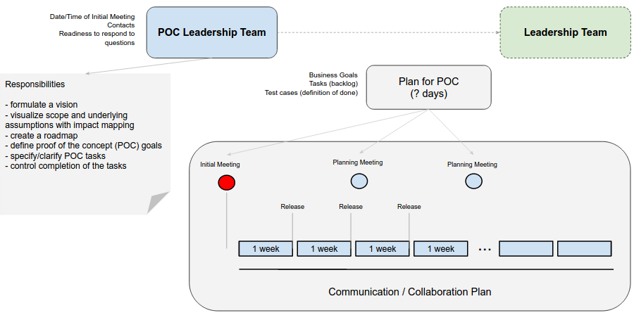

Choice EHR 2.0 Vision
- Single code base core automates most common hospital processes (80/20)
- Utilizes available standards to maximum
- Fast deployment of the core product (automated when possible)
- Users learn the system in 15 minutes (minimalistic interface for a user at any specific moment, only what a user needs right now is presented within the UI)
- Scalable and efficient: 10 beds to thousands per installation, 100+ installations can be supported by a relatively small team
- Hospital specific functionality can be implemented in the form of extensions
Responsibility of the EHR core
- sufficient patient's clinical data for generation of the valid CCD based on the MU common data set (stage 2)
- sufficient patient's clinical data for clinical decision support (stage 2)
Technical Stack
- Linux (operating system)
- PostgreSQL (open source database)
- Ruby & Ruby On Rails - efficient web development stack
- AngularJs - google open source MVVM framework for interactive front-end applications
- other front-end libraries: twitter bootstrap, d3, bower, node, npm, less, coffeescript etc
- Clojure, a perfect pragmatic choice between quick development, enterprise java infrastructure and formal academic power
- Chef, Vagrant & Sensu (for infrastructure as a code)
- Amazon AWS, a source of compute and storage power
Development methodologies
- agile development methods: backlog, scrum (meetings), pair programming, user stories etc
- Continuous Delivery
- Test Driven Development & Continuous Integration
- DevOps (infrastructure as a code)
- rapid prototyping
- lean customer development
Development Tools
- github - source control
- teamcity - continuous integration (deployment) server
- redmine - issue tracker
- selenium - web browser automated testing
- new relic - web traffic performance monitoring
- chef - infrastructure management
- sensu - monitoring
- balsamic, mind mapping and other tools for customer development, UX testing
etc
Security Measures
- AWS hosting is HIPAA compliant
- no protected health information (PHI) stored on local devices
- data-at-rest is encrypted, SSL encryption of data-in-transit
- biometric authentication of users when applicable
- comprehensive audit log and monitoring tools
- We educate our users. Security measures built into a product have to be supplemented by an organization culture and policies
Choice Hospital System process
